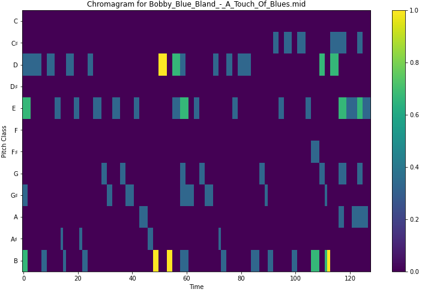

Models Evaluated
The models chosen for the experimentation and benchmark were CycleGAN (Lu and Dubnov, 2021) and CycleGAN (Brunner, Wang, Wattenhofer and Zhao, 2018).
CycleGAN
The CycleGAN approach follows the successful architecture proposed by (Zhu, J. Y. et al. , 2017). As the name implies, The model is a Generative Adversarial Network and the core idea behind it is that style transfer is cyclical, that is, converting a song from genre A to genre B and then back to A, should yield the original input. They use a deep architecture with applying various convolutions with instance normalization in order to stabilize training, and defining custom losses for each generator as well as a combined cycle loss.
While the original code was developed in TensorFlow 1 was provided, no dependencies or documentation was provided. The authors also made an attempt to convert the model to TensorFlow 2 but again, no dependencies were specified and very little was left in the way of documentation, which made it a difficult model to reproduce.
These issues are addressed in the provided implementation, where the refactored code is well documented and dependencies are clearly specified. In addition, we use the TensorFlow dataset format for saving the data, which allowed for a slight improvement in performance and increased batch size.
ChordGAN
In contrast, the architecture employed by ChordGAN is relatively simple with discriminator and generators that use only dense layers and are shallow. The main innovation in this approach is that the generator takes the chromagram representation of the song as input and is trained to generate the MIDI representation.
Again, the original codebase was not well documented and developed using TensorFlow 1. In addition many of the preprocessing steps happened in parallel with training, which obfuscated the model implementation. We made improvements to the documentation, delineated data preparation and model training and provide scripts for automating training and evaluation.